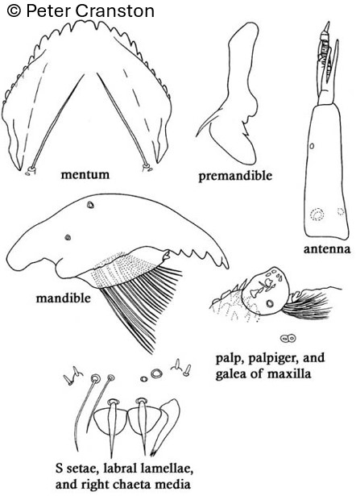

Sympotthastia (Pagast, 1947)

Mentum
Dent médiane en forme de dôme ou faiblement bilobée et 2-3 fois plus large que la 1ère dent latérale.8-10 paires de dents latérales.
Mandibules
Dent apicale plus courte que la largeur combinée de 4 dents internes.
Labre
SI et SII en forme de « lamelles ». Peigne de l’épipharynx composé de 3 écailles longues et pointues. Prémandibules étroites, avec une grande dent apicale et 2-3 petites dents internes rapprochées.
Ecologie
Peu connue.
Espèces recensées en France
3 : S. macrocera, S. spinifera, S. zavreli.